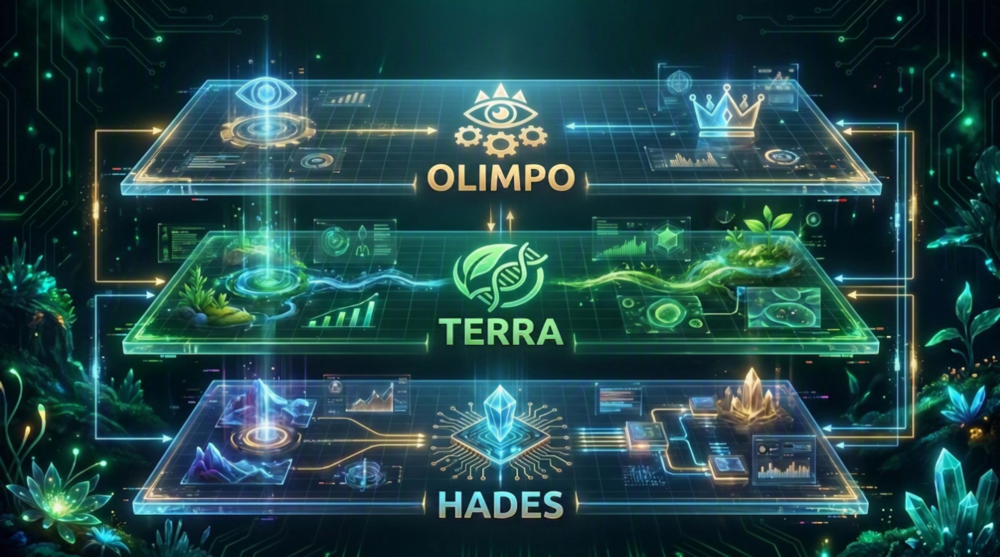
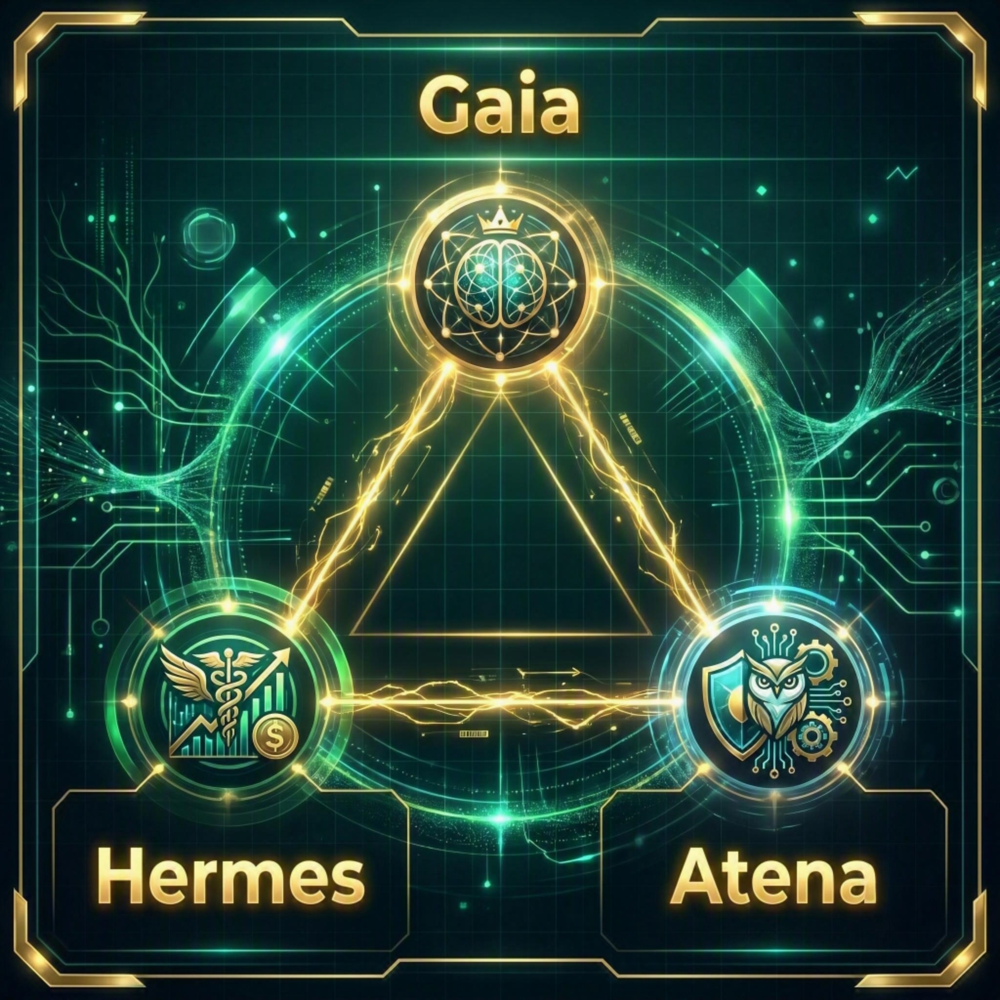

Multi-Agent Architecture
Multi-agent architecture establishing a neural network across production ecosystems.
A manifesto for planetary resilience, driven by artificial intelligence and absolute data precision.
01 // The Crisis
The variables have changed. With Super El Niño redefining global rainfall patterns and fertilizer routes blocked by conflict, food security strategy demands new paradigms. We are not just navigating a storm; the old models have simply stopped working.

02 // The Solution
Multi-agent architecture establishing a neural network across production ecosystems.
Continuous learning algorithms processing terabytes of environmental data in real time.
Shifting from reactive monitoring to proactive and automated governance.
The Mythological Architecture
A hierarchical and multi-agent AI infrastructure. Continuous global data ingestion drives agricultural physical execution under the strict financial and strategic governance of high-performance models.

The Council of Sovereignty. Strategic Deliberation and Final Decision.
The Manifestation Interface. Physical Execution and Biological Feedback.
The Material Intelligence Engine. Data Mining, Extraction and Refinement.
Resolves conflicts, routes tasks and maintains the strategic vision of the system. The intelligence that governs everything.
Meta-optimizer. Refines system prompts, audits logs and reduces computational cost per decision.
Transforms market data and public tenders into grant submissions and ROI projections with 98% extraction accuracy.

03 // The System
Leaftix GaiaOS is not just a control panel. It is the underlying logical layer connecting environmental sensors, edge nodes and autonomous machinery into a single, cohesive intelligence, capable of anticipating and mitigating climate risk before it impacts production.
Together with 1.240 operators and researchers awaiting the system.